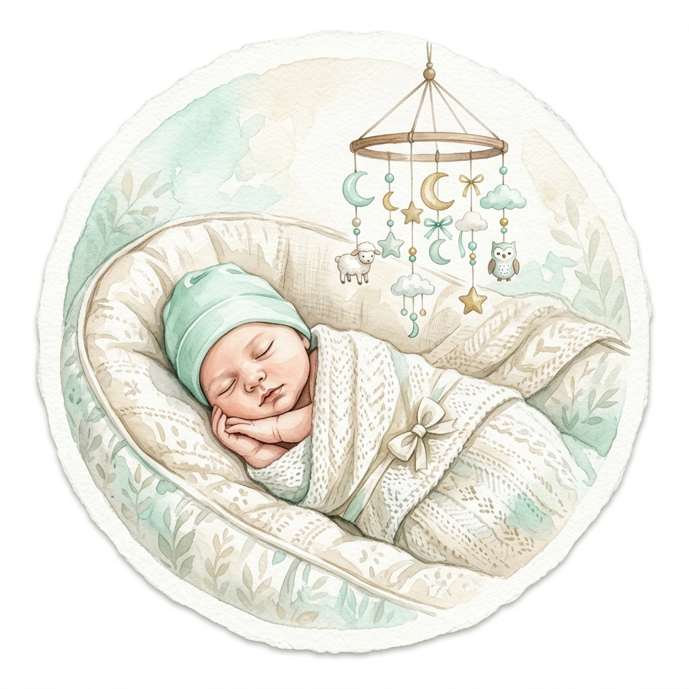
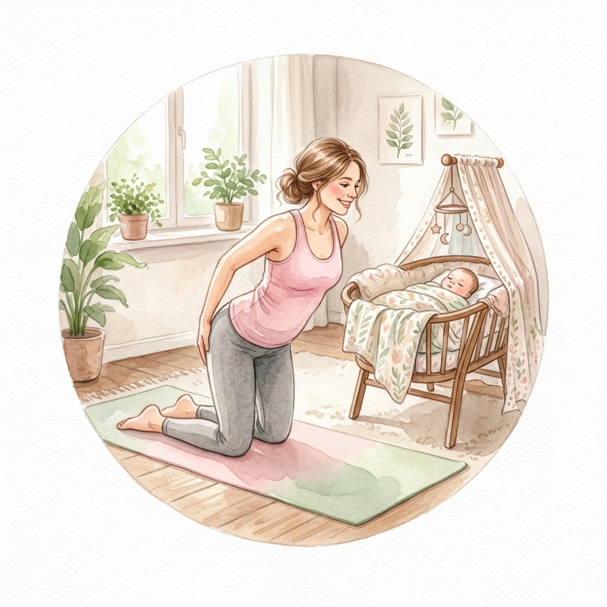
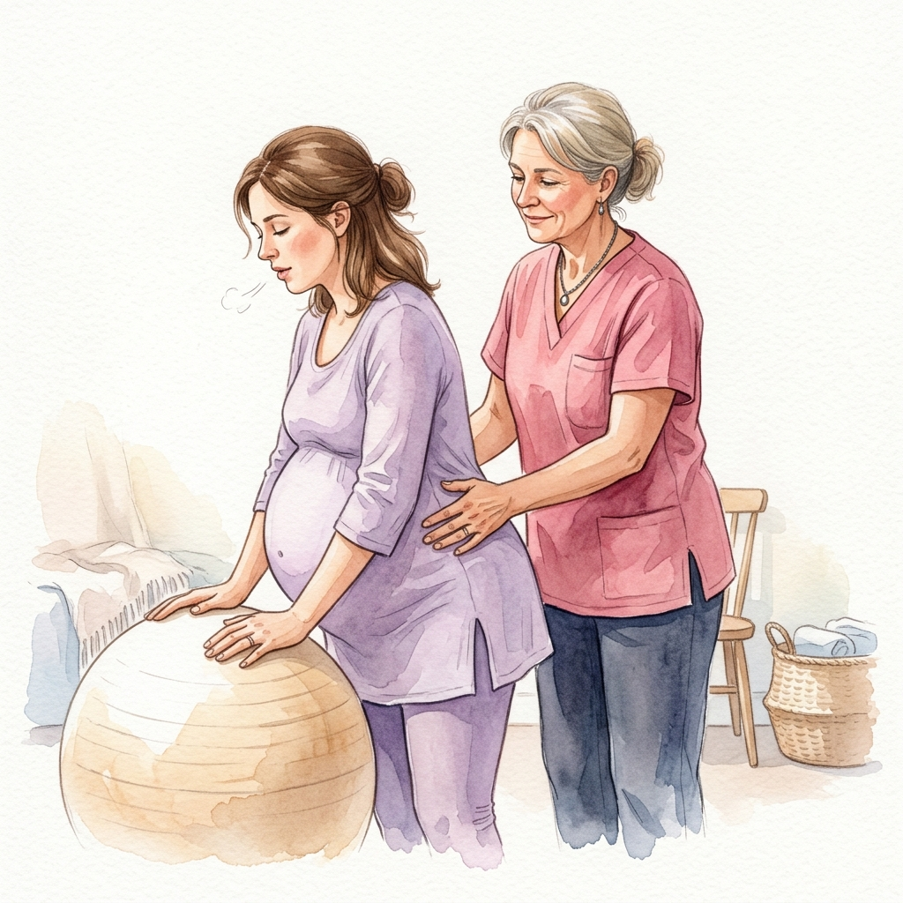

腰痛、骨盤の軋み、恥骨痛、むくみetc…
「産んだら治る」と医者に言われたけど我慢できない！
マイナートラブルを解消し
ママも赤ちゃんも楽な
育児を実現する方法

【楽しい妊娠生活】＆【楽な育児】を手に入れませんか？
腰痛、骨盤の軋み、恥骨痛、むくみetc…
「産んだら治る」と医者に言われたけど我慢できない！
マイナートラブルへの対策は、表面的な症状への対処療法が主流。
症状が出る→対処療法→一時的に楽になる→また症状が出る→…
というイタチごっこが続きます。
しかし「ウテロケア」では、楽な妊娠生活・産後生活を送る"3つの要素"に注目し、マイナートラブルを根本から解消します。
マイナートラブルに悩まされている方の99％は「子宮」の状態でトラブルの強さが決まることを知りません。不調パターンは①子宮前のめり型 ②子宮落下型 ③子宮栄養失調型の3つ。ご自宅で質問に答えるだけで診断できます。
横隔膜・腹筋群・多裂筋・骨盤底筋群——この4つの筋肉群がバランスよく機能することでマイナートラブルは改善します。ただし闇雲にケアするのではなく、あなたの不調パターンに最適なバランスで整えることが重要です。
子宮は赤ちゃんにとって大切な臓器ですが、人間の生命維持には不要なため栄養が届くのが一番遅いと言われています。子宮栄養学を学ぶことで、赤ちゃんにしっかり栄養を届けられる健康な子宮になります。
「産んだら治る」——本当にそうでしょうか？
産前の不調を放置すると、産後にさらに深刻な問題として現れます。
臨月まで元気に
動ける体に

よく飲み・よく寝る
健康な赤ちゃん

産後の回復が
スムーズに
整体に通い続ける
費用が不要に
妊娠線のない
きれいなお腹
育児を楽しめる
心と体の余裕

古谷さん（32歳）
妊娠初期から腰痛に悩まされ、トコちゃんベルトを使っても痛みが取れない日々。どうしても9ヶ月まで働きたかったので、ウテロケアを開始。
その結果、無事に働きたい時期まで働け、妊娠後期まで上の子を抱っこしてあげられました。産まれてきた赤ちゃんは、よく飲み、よく寝る子で、新生児期も３時間は授乳が空きました。
「赤ちゃんと自分の健康」「楽しい妊娠生活」「楽な産後」を手に入れることができました。

斉藤さん
週2回の妊婦整体は30分8000円。1万円の妊娠線クリーム。それでも改善しなかった不調が、ウテロケアを始めてからは嘘のように改善。
産休に入ってからもディズニーへ遊びに行ったり、臨月には友人の結婚式にも参加。妊娠線もできず、産後直後には病院の助産師さんに「え、お腹引っ込むの早いですね！」と驚かれるほど。
「もっと早くから知っておきたかったー！」と、とても喜ばれています。

高橋さん
妊娠6ヶ月から切迫早産で入退院を繰り返していた高橋さん。ウテロケアを開始し、臨月に入っても元気にハードスケジュールをこなし、無事37週で2800g越えの元気な赤ちゃんを出産。
母乳だけなのに、新生児期から夜4時間も授乳の間隔が空いていました。「産んだ後って、普通はこんなに動けないんだよね？思ったより寝れるし！」と笑いながら話してくれました。

自分の不調の原因パターンを特定し、優先すべきケアを明確にします

4つの筋肉群の整え方と改善の全体像が明確になります

歩く・座る・寝る…毎日の動作への一工夫で自然に改善へ

子宮前のめり型の方に特に高い効果を発揮する使い方をマスター

子宮落下型の改善に役立つ骨盤を支えるグッズと効果的な使用法

赤ちゃんにしっかり栄養を届ける正しい食事との付き合い方

パターンに合った呼吸法で子宮を自然に良い位置に保てるように

最も効果的な3つのトレーニングでマイナートラブルを早く解消

妊婦さんでも無理なくできる4つの方法を習得

不調パターン別に自分にピッタリのケア内容と頻度が明確に

母子ともに健康でストレスのない母乳育児ができるように

一度できたら消えない妊娠線を防ぐ4つのポイント

出産時の会陰裂傷リスクを限りなく低くする予防法

誰も教えてくれない、産後の体を不調から守る方法
まだあります！
寝床用品、抱っこ紐、ベビーカー、お風呂用品など、自分に合ったグッズの選び方を紹介。人気だけど実は赤ちゃんに良くないものの解説も。

「無痛分娩でお産が進まない！」そんな時に体を整えるだけで陣痛が強くなるケア。実際にこのケアで何人も赤ちゃんが生まれた魔法のようなケアです。
腰痛、恥骨痛、むくみ、お腹の張り——。妊娠中のこうした不調に対して、病院では「妊娠中だから仕方ないですね」と言われることがほとんどです。
でも、産前の不調を放置すると、それは産後にも引き継がれます。
これは脅しではなく、私が現場で何度も見てきた現実です。
でも、逆に言えば——妊娠中のたった数ヶ月のケアで、この連鎖を断ち切ることができるということでもあります。
産前にしっかりケアしていた方は、産後の回復が早く、赤ちゃんとの時間を楽しめて、パートナーとの関係も穏やか。そういう方を、私はたくさん見てきました。
「わかっているけど、できない」で終わらせないでほしい。忙しいからこそ、効率よく、正しいケアを知っておくことが、あなたと赤ちゃんの未来を変えてくれます。
妊娠中の不調を我慢するのではなく、自分でケアできる力を身につける。その結果、元気な妊娠生活、スムーズなお産、よく寝てくれる赤ちゃん、そして楽な産後を手に入れる。
ウテロケアは、そんな未来のための知識と技術を、全14本の動画でお伝えするプログラムです。一度学べば、2人目・3人目の妊娠でもずっと活用できます。
33,000円（税込・買い切り）
お申込み後すぐに会員サイトのID・パスワードをお届けします
お支払い方法
銀行振込（一括）／ クレジットカード（最大24回分割に対応）
よくある質問
Q：スマホやタブレットでも視聴できますか？
A：はい、問題なく視聴できます。スキマ時間やベッドで横になっている時でも、指一本で動画にアクセスして気軽に学べます。
Q：1本あたりの動画の長さはどれくらいですか？
A：1本あたり10分〜20分程度です。本当に必要な情報だけをまとめて、できるだけ短く、分かりやすくしました。
Q：全く知識がないのですが大丈夫ですか？
A：はい、全く問題ありません。実践された方も全員、知識ゼロからのスタートでした。素直に実践した結果、早い方で1日、遅くとも1週間で症状の改善を実感されています。
Q：返金はできますか？
A：返金はお受けしておりません。自分自身と赤ちゃんのために、真剣にマイナートラブルを改善したいと思う方だけご参加ください。

年間2,000件以上の出産がある病院に5年間勤務し、累計20,000名を超える妊婦さん・産婦さん・赤ちゃんのケアを経験。病院では「病気ではないから」とケアされないマイナートラブルに疑問を感じ、独自に研究を重ねて「ウテロケア」を確立。
独立後は、多くの妊婦さんのむくみ・お腹の張り・不正出血改善、妊娠線予防、産後の体型回復をサポート。現在は自身も初めての子育て真っ最中で、ウテロケアを実践しながら、母として・助産師としての両方の視点でお伝えしています。
私がこのプログラムを作った理由は、ひとつだけです。
笑顔のお母さんを、一人でも多く増やしたい。
助産師として何千人ものお母さんと接してきて、妊娠中の不調や不安を「仕方ない」と我慢している方がとても多いことに気づきました。でも、正しい知識とケアがあれば、妊娠生活はもっと楽しめるし、産後の体の回復も全然違います。
そして今、私自身が初めてのお母さんになって、その思いはさらに強くなりました。
お母さんが笑顔でいると、赤ちゃんも安心します。お母さんが元気だと、家族みんなが幸せになれます。このプログラムが、あなたとご家族の笑顔につながれば、これ以上嬉しいことはありません。